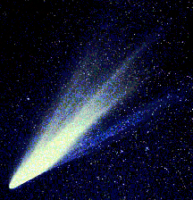

O nome cometa vem da palavra em Latin cometa que significa "de cabelo longo". A menção mais antiga da observação de um cometa foi feita por um astrólogo da corte Chinesa em 1059 B.C.

Os cientistas acreditam que cometas são escombros deixados para trás pela nebulosa que se condensou para formar o Sol e os planetas em nosso sistema solar. Acredita-se que a maioria dos cometas origina-se na enorme nuvem chamada Nuvem de Oort. Acredita-se que a Nuvem de Oort cerque o nosso sistema solar e extenda-se a mais de meio caminho até a estrela mais próxima, Alpha Centauri, a qual encontra-se à 150.000 unidades astronômicas de distância. Os cientistas acham que cerca de 100 milhões de cometas orbitam o Sol. Um cometa tem um centro distinto chamado núcleo. A maioria dos astrônomos acha que o núcleo é formado por água congelada e gases misturados com poeira e material rochoso. Os núcleos dos cometas são descritos como bolas de neve sujas. Uma vaga nuvem chamada coma cerca o núcleo. A coma e o núcleo juntos formam a cabeça do cometa.